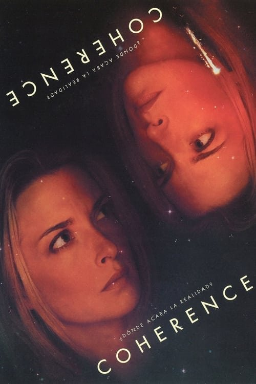

Coherence (2013)
Sinopsis Rápida
Una cena entre amigos se convierte en una pesadilla existencial cuando un cometa pasa cerca de la Tierra, desencadenando una serie de eventos extraños y perturbadores que cuestionan la realidad misma.
Sinopsis Detallada
En una noche aparentemente normal, ocho amigos se reúnen para una cena. La aparición de un cometa y una serie de extraños sucesos desatan una espiral de paranoia y confusión, donde las identidades se borran y la realidad se fragmenta. 'Coherence' explora temas de elección, determinismo, y las múltiples posibilidades de un universo paralelo a través de un guion inteligente y una atmósfera tensa que te mantendrá al borde del asiento. La película es una obra maestra de bajo presupuesto que destaca por su originalidad y su capacidad de generar una inquietud profunda con recursos mínimos.
¿Por qué tenés que verla?
- Una trama inteligente y enrevesada que te mantendrá adivinando hasta el final.
- La dirección logra crear una atmósfera de tensión y misterio con pocos recursos.
- Su impacto en el cine independiente y su capacidad para generar debate sobre la naturaleza de la realidad.
- Actuaciones sólidas que transmiten la creciente angustia y confusión de los personajes.
Idea Extra
Análisis de las teorías y interpretaciones de los múltiples finales posibles de 'Coherence', explorando las implicaciones filosóficas de la película.